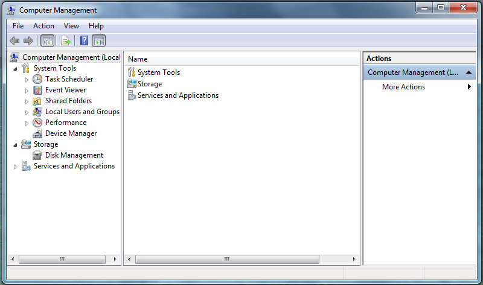

How To – Delete a New User to Windows
This How To provides the steps required to delete a user on a computer that is runnining a Windows operating system.
To Delete a New User
Make sure that the computer and monitor are connected to a power source and that the associated keyboard, mouse and monitor cables are properly connected.
- Log on to the computer as Administrator.
- From the Start menu at the bottom of the screen, select Control Panel. The All Control Panel Items window is displayed.
- From the All Control Panel Items window select Administrative Tools.
- Select Computer Management.
The Computer Management screen is displayed.

- Double-click on System Tools to expand the directory.
- Double-click on Local Users and Groups to expand the directory.
- Double-click on the Users folder.
- Right-click on the user account that you want to delete. A menu is displayed.
- Select Delete from the menu.
The user account is deleted from the selected group.